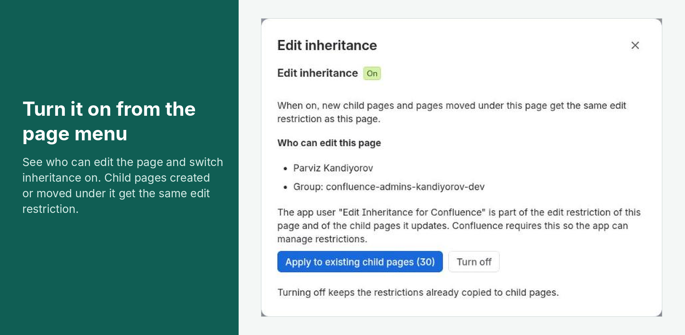
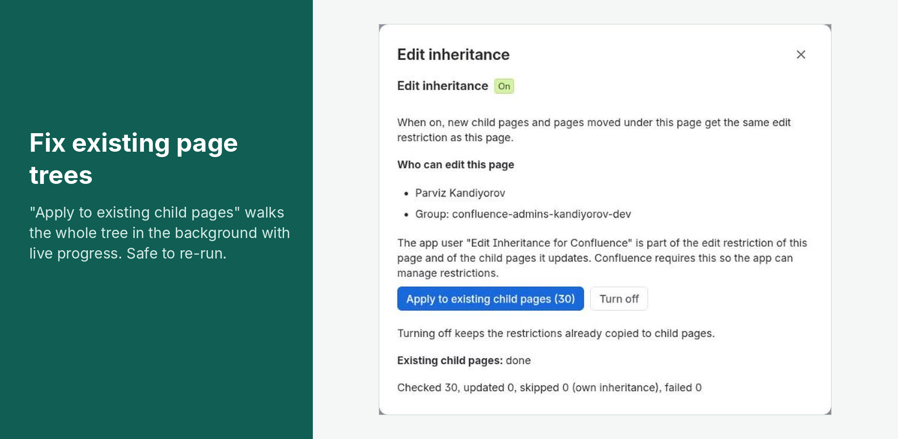
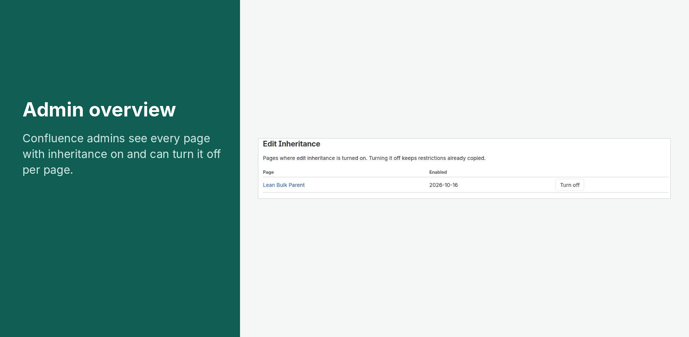

Edit Inheritance for Confluence
Confluence Cloud passes view restrictions down to child pages, but not edit restrictions. Edit Inheritance for Confluence closes that gap: turn it on for a page, and every child page created under it or moved under it gets the same edit restriction automatically.
Turn it on for a page
- Restrict who can edit the page (lock icon → "Anyone can view, only some can edit" or "Only specific people can view or edit").
- Open the page's ••• (More actions) menu → Edit inheritance.
- Check the list of people and groups who can edit the page, then click Turn on.
You need permission to edit the page. If the page has no edit restriction, there is nothing to inherit, and the app tells you so.

What happens next
- New child pages (at any depth) get the edit restriction of the nearest ancestor page that has inheritance turned on, usually within 5–10 seconds of being created.
- Pages moved under such a page get the same treatment.
- Copying only adds people and groups. It never removes anyone already on a child page's restriction.
- If a child page has inheritance turned on itself, it becomes the source for its own subtree.
Existing child pages
Pages that already exist under the page are not changed when you turn inheritance on. To update them, open Edit inheritance and click Apply to existing child pages (N). The work runs in the background and the dialog shows progress. Running it again is safe: pages that already match are left alone.

The app user appears in edit restrictions
When you turn inheritance on, the app adds its own user, "Edit Inheritance for Confluence", to the page's edit restriction, and to its view restriction if the page restricts viewing. It also adds itself to the edit restriction of every child page it updates. Confluence requires this: an app can only change a restriction it stays part of. Please don't remove the app user from these pages, or the app won't be able to update their children.
Turning it off
Open Edit inheritance → Turn off. New and moved pages are no longer updated. Restrictions that were already copied stay as they are, and the app user stays on the page's own restrictions (remove it manually if you wish). Confluence administrators can see every page with inheritance turned on, and turn it off, under Confluence settings → Edit Inheritance.

Limitations
- Pages only. Folders, whiteboards, databases and other content types are skipped. A page inside a folder inherits from the nearest page above the folder.
- Pages the app cannot see. If a parent page further up restricts viewing and the app is not on that restriction, the app is not notified about pages below it. The dialog warns you when inheritance is turned on in such a place: add the app user to that parent's view restriction.
- Moves under view-restricted pages work once the app is on the parent's view restriction (the app adds itself when you turn inheritance on). If a moved page did not pick up the restriction, open the parent page's Edit inheritance dialog and click Apply to existing child pages.
- Only edit restrictions are copied. View restrictions are handled by Confluence itself.
Data the app stores
For each page with inheritance turned on, the app stores the page ID and the time it was turned on. For a background "apply" run, it stores counters (pages checked, updated, skipped, failed) and timestamps. It stores no personal data: no account IDs, names or email addresses, and no page content or titles. See the Privacy Policy.
Support
Email support@parviz.tj. See Support & SLA for response times.